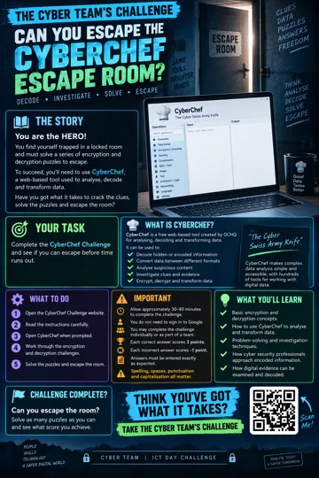
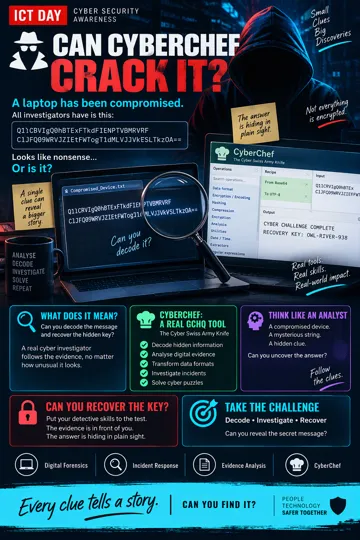
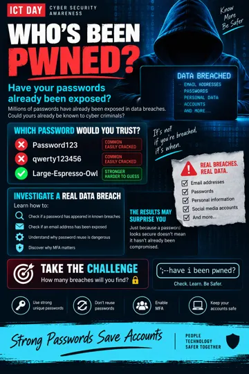
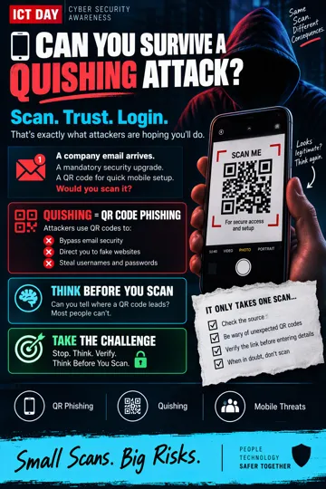
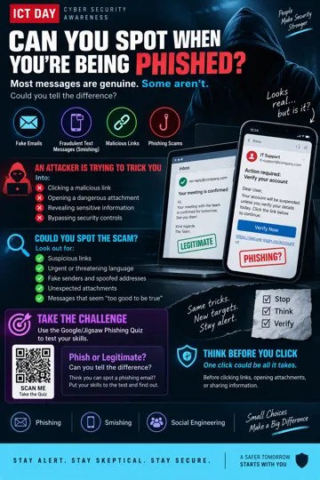

Explore · Learn · Share
The poster collection
Five visual briefings from the Cyber Team. Open a poster to explore it, or download a copy.
These are the supplied original posters; printed event labels and escape-room rules may differ from this website. The CyberChef demonstration poster includes its worked answer.


Can CyberChef crack it?
Follow the evidence and uncover the hidden message.
View full size ↗ · Download





Can you spot the phish?
Recognise suspicious messages and misleading links.
View full size ↗ · Download